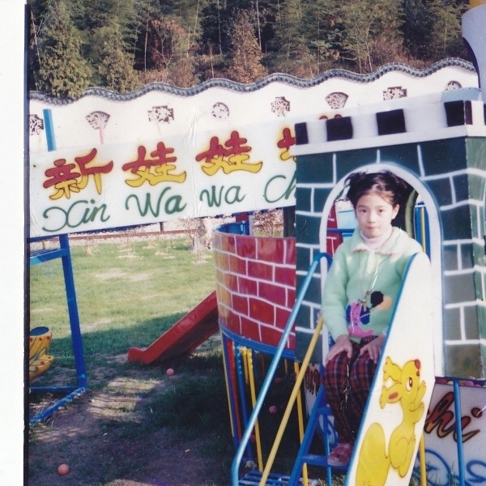
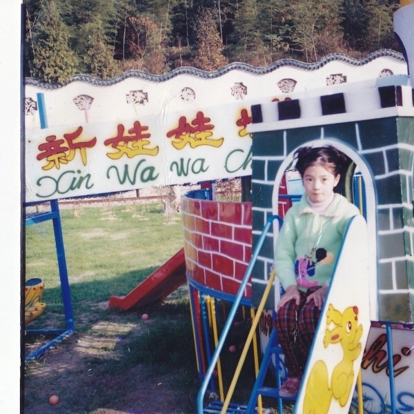
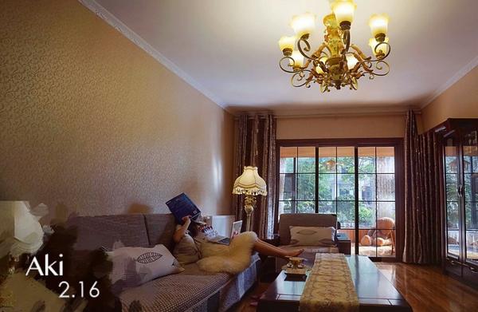
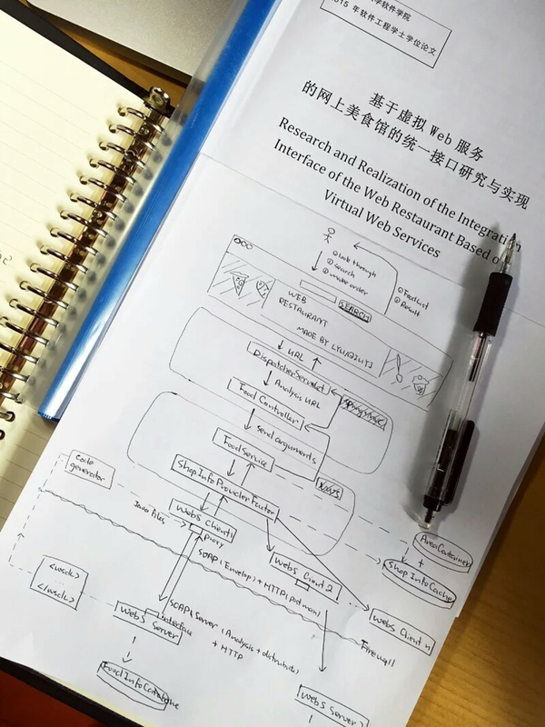
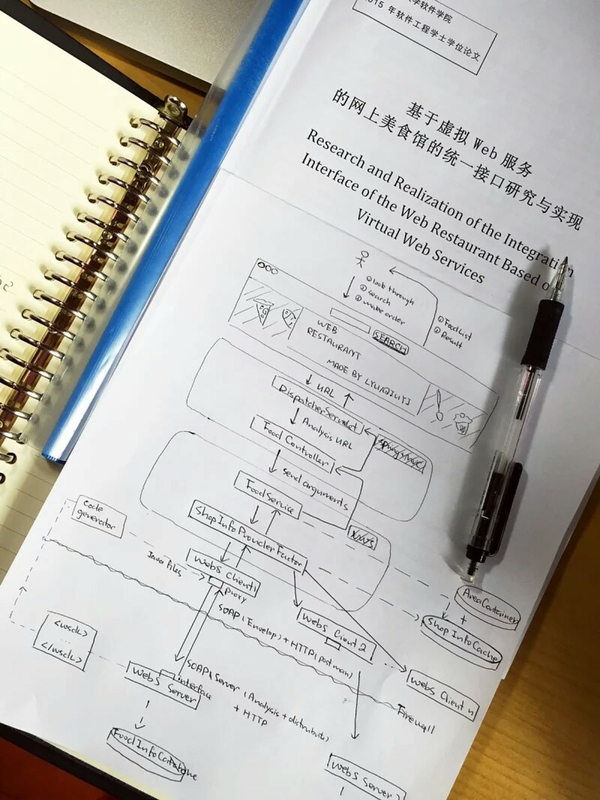

- 公司
- 互联网
- 移动互联网
- 程序员
- 工程师
身边有个漂亮女程序员什么体验？
寻她之旅丶
不靠谱的摄影爱好者
9月12号晚更新：在更新一张美女小时候的照片，果然美女从小时候就能看出来。

————————————————————————————————————————
9月12号更新：我也不太懂什么职位 所以就随便问了下（不要吐槽我），因为评论区都说一张学生卡证明不了什么我只好放上聊天记录好了。而且大家没必要太多质疑，骗大家也没有什么好处。美女程序猿也逛知乎，大家欣赏照片就好。谢谢。
————————————————————————————————————————
9月11号更新：已经有52个赞了，如约放上美女程序猿的照片。哈哈哈。
这张照片是来证明美女是程序猿的。
————————————————————————————————————————
原答案如下：
昨天征得美女程序猿的同意后，我也要来装逼了。
我知道你们就是想看照片，但是我觉得我还是要俗气的说点东西。
美女程序猿在我之前工作的照相馆拍照认识的，一行三人。
拍照的间隙就会聊聊咯，让我震惊的是她居然大我好几岁，我一直不信还让她拿身份证给我看。哈哈。
后来嘛，美女程序猿还很喜欢玩LOL，然和就说以后找她玩LOL就把她微信号“骗”过来了。
知道她的职业是程序猿也是通过微信知道的，那么就不再废话了，下面上照片好了。
先上一张照片，赞数多了在上其他的图片。哈哈哈。

————————————————————————————————————————
9月12号更新：我也不太懂什么职位 所以就随便问了下（不要吐槽我），因为评论区都说一张学生卡证明不了什么我只好放上聊天记录好了。而且大家没必要太多质疑，骗大家也没有什么好处。美女程序猿也逛知乎，大家欣赏照片就好。谢谢。
————————————————————————————————————————
9月11号更新：已经有52个赞了，如约放上美女程序猿的照片。哈哈哈。
这张照片是来证明美女是程序猿的。
————————————————————————————————————————
原答案如下：
昨天征得美女程序猿的同意后，我也要来装逼了。
我知道你们就是想看照片，但是我觉得我还是要俗气的说点东西。
美女程序猿在我之前工作的照相馆拍照认识的，一行三人。
拍照的间隙就会聊聊咯，让我震惊的是她居然大我好几岁，我一直不信还让她拿身份证给我看。哈哈。
后来嘛，美女程序猿还很喜欢玩LOL，然和就说以后找她玩LOL就把她微信号“骗”过来了。
知道她的职业是程序猿也是通过微信知道的，那么就不再废话了，下面上照片好了。
先上一张照片，赞数多了在上其他的图片。哈哈哈。
袁德果
日本，京都，阿美寮。

我姐。
人在日本。
感觉就是会用很多高科技IT产品，然后智商很高，愿意尝试许多新鲜事物。从小到大成绩都好到爆，各种碾压。
认真的时候很认真，出去玩的时候嗨得人都找不到了。常常给我一种城里的人很会玩的感觉。  此图证明一下， 女软件工程师的属性。
居然能被看到。
貌似这个问题下面回答都一堆了。( •̀∀•́ )
(23:30更新图，姐姐终于允许我发正面)
为了亲戚们。→_→
(2015.9.4 14:30)
换个风格吧，我姐双马尾请移步。
有着美丽的双马尾是怎样的体验？ - 袁德果的回答
我姐。
人在日本。
感觉就是会用很多高科技IT产品，然后智商很高，愿意尝试许多新鲜事物。从小到大成绩都好到爆，各种碾压。
认真的时候很认真，出去玩的时候嗨得人都找不到了。常常给我一种城里的人很会玩的感觉。  此图证明一下， 女软件工程师的属性。
居然能被看到。
貌似这个问题下面回答都一堆了。( •̀∀•́ )
(23:30更新图，姐姐终于允许我发正面)
为了亲戚们。→_→
(2015.9.4 14:30)
换个风格吧，我姐双马尾请移步。
有着美丽的双马尾是怎样的体验？ - 袁德果的回答